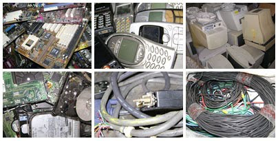

Descarte adequado:
- Para não provocar a contaminação e poluição do meio ambiente, o correto é fazer o descarte de lixo eletrônico em locais apropriados como, por exemplo, empresas e cooperativas que atuam na área de reciclagem.
- Celulares e suas baterias podem ser entregues nas empresas de telefonia celular. Elas encaminham estes resíduos de forma a não provocar danos ao meio ambiente.
- Outra opção é doar equipamentos em boas condições, mas que não estão mais em uso, para entidades sociais que atuam na área de inclusão digital. Além de não contaminar o meio ambiente, o ato ajudará pessoas que precisam.
© 2014 Site desenvolvido por Diogo Paradela e Anderson Ramos